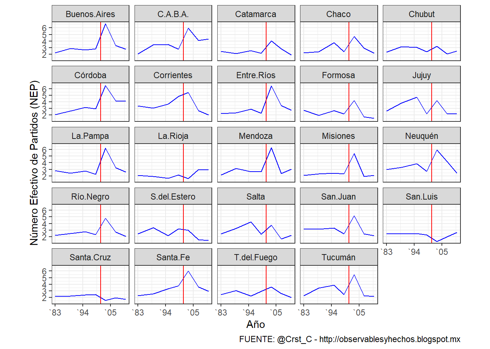
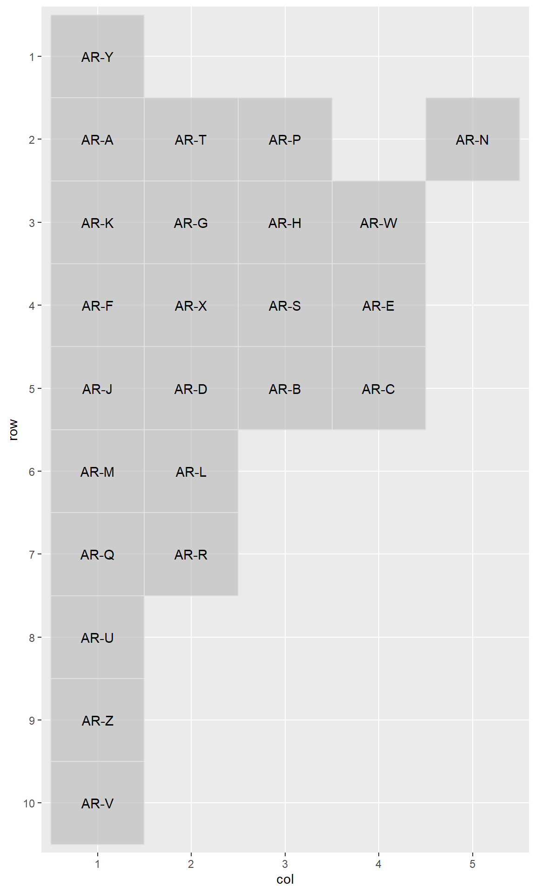
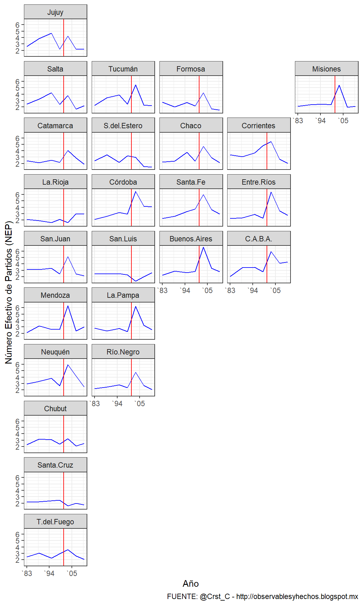

En este posteo quiero mostrar brevemente el proyecto geofacet_AR, presentado en la primera edición de LatinR, tal como adelanté en el primer post. El mismo es una \(extensión^2\) (del proyecto de Ryan Hafen y, en otro nivel, de las grillas o facet de ggplot2).
Me permito traducir el siguiente concepto de la nota introductoria del propio Hafen:
“El paquete
geofacetamplíaggplot2de una manera que facilita la creación de visualizaciones geográficamente facetadas enR. Para usargeofacetse toman datos que representan diferentes entidades geográficas y se aplica un método de visualización para cada entidad. El conjunto resultante de visualizaciones conforma una cuadrícula que imita la topología geográfica original”.
A continuación presetnaré con un ejemplo sencillo cuales (creo) son las mayores ventajas de geofacet. A saber:
se pueden graficar múltiples variables para cada unidad geográfica
se pueden aplicar otros esquemas de codificación visual más allá del color
cada unidad geográfica tiene asignada la misma proporción espacial
Número Efectivo de Partidos (NEP)1
Vamos a usar datos de NEP basado en el trabajo de Calvo & Escolar(2005) y el Atlas Electoral de @andy_tow. El indicador computa la proporción de votos que el partido \(_i\) obtiene sobre el total de votos emitidos:
\(\LARGE N_{2}=\frac{1}{\sum_{i}^{n}p_{i}^2}\)
Las fuetes origniales fueron tucumaneadas a @Crst_C y están disponibles en este post.
El gráfico anterior funciona bastante bien. Usa la función facet_wrap de ggplot2 para generar una grilla con el calculo de NEP para cada una de las provincias. Una serie de tiempo (1983-2011) y una linea roja vertical (geom_vline) que marca el año 2001 (la explosión del sistema de partidos o El Naufragio como lo denominaron algunos). Lo que geofacet permite con muy poco esfuerzo es acomodar la grilla simulando la geografía “como si fuera un mapa”, como veremos más adelante.
Una de las propuestas de geofacet es potenciar el desarrollo colaborativo de geografías. Cuando lo descubrí, de hecho, ya existía una grilla representando la geografía de Argentina (argentina_grid1), desarrollada por Elio Campitelli. Como puede leerse en el README.md del repositorio, decidí hacer una segunda versión basándome en el código de Elio; salvo que en este caso se eliminaron las grillas correspondientes a Malvinas y la Antartida.
El código para crear el objeto que luego servirá como grilla para los gráficos es el siguiente. Un data.frame con cuatro variables. col y row marcan posiciones de filas y columnas en la grilla, code asigna un código a cada provincia, y name contiene los nombres de esos distritos.
Finalmente grid_preview(argentina_grid2) permite visualizar la grilla - mapa. Así, facilmente podemos identificar que Jujuy (AR-Y) - la primera unidad en las cuatro variables- tiene como coordenadas de filas y columnas (1, 1) y Tierra del Fuego (AR-V) - la última unidad de las variabales de nuestro data.frame tiene como coordenadas (10, 1), siendo el primer valor para las filas (row) y el segundo para las columnas (col),
library(geofacet)
# MAPA GRILLA DE PROVINCIAS ARGENTINAS
argentina_grid2 <- data.frame(
col = c(1, 3, 5, 1, 2, 1, 3, 4, 2, 2, 4, 1, 3, 3, 4, 1, 2, 2, 1, 1, 2, 1, 1, 1),
row = c(1, 2, 2, 2, 2, 3, 3, 3, 3, 4, 4, 4, 4, 5, 5, 5, 5, 6, 6, 7, 7, 8, 9, 10),
code = c("AR-Y", "AR-P", "AR-N", "AR-A", "AR-T", "AR-K", "AR-H", "AR-W", "AR-G", "AR-X", "AR-E", "AR-F", "AR-S", "AR-B", "AR-C", "AR-J", "AR-D", "AR-L", "AR-M", "AR-Q", "AR-R", "AR-U", "AR-Z", "AR-V"),
name_es = c("Jujuy", "Formosa", "Misiones", "Salta", "Tucumán", "Catamarca", "Chaco", "Corrientes", "S.del.Estero", "Córdoba", "Entre.Ríos", "La.Rioja", "Santa.Fe", "Buenos.Aires", "C.A.B.A.", "San.Juan", "San.Luis", "La.Pampa", "Mendoza", "Neuquén", "Río.Negro", "Chubut", "Santa.Cruz", "T.del.Fuego"),
stringsAsFactors = FALSE
)
grid_preview(argentina_grid2)
geofacet + NEP
Habiendo cargado nuestro mapa, solo debemos agregar una capa al chunk de ggplot2:
#VERSION GEOFACET
ggplot(nep.prov, aes(year, NEPp)) +
geom_line(color = "blue") +
#facet_wrap(~name_es) + ESTA ES LA LINEA QUE REEMPLAZAMOS DEL GRAIFCO ANTERIOR
facet_geo(~ name_es, grid = argentina_grid2) + # ESTA ES LA LINA PARA ORDENAR LA GRILLA COMO SI FUERA UN MAPA
ylab("Número Efectivo de Partidos (NEP)") +
scale_x_continuous(name = "Año",
breaks = c(1983, 1994, 2005),
labels = c("`83","`94","`05"))+
geom_vline(xintercept = 2001, colour="red")+ labs(caption="FUENTE: @Crst_C - http://observablesyhechos.blogspot.mx" ) +
theme_bw()
Esa es la idea básica de qué es y para qué sirve geofacet. En un próximo post intentaré con otros ejemplos mostrar un poco más el detrás de escena del código.
Footnotes
“es el número hipotético de partidos de igual tamaño que tendrían el mismo efecto total en la fraccionalización del sistema que el número ‘real’ [actual] de tamaño desigual” Laakso & Taagepera (1979)↩︎